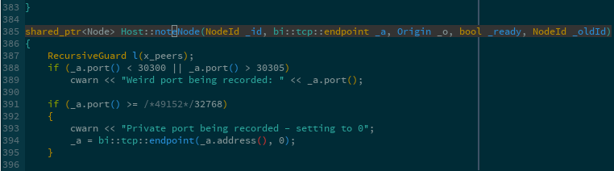
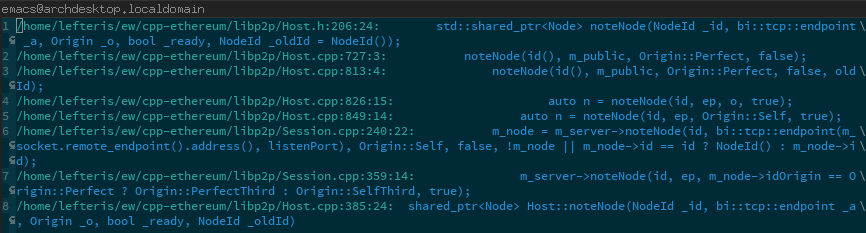
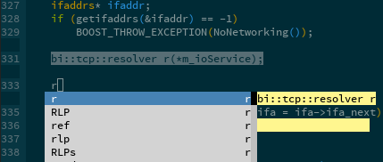
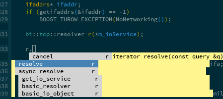
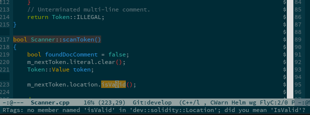
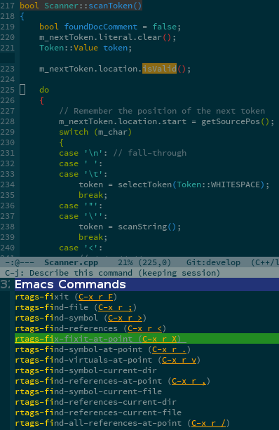
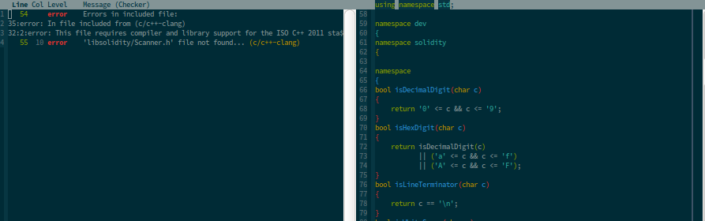
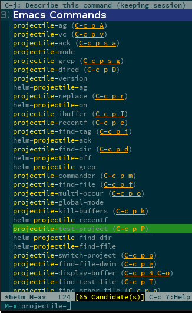

We will use el-get to obtain packages.
Installs, updates and initializes Emacs packages for you.
(add-to-list 'load-path "~/.emacs.d/el-get/el-get") (unless (require 'el-get nil 'noerror) (with-current-buffer (url-retrieve-synchronously "https://raw.githubusercontent.com/dimitri/el-get/master/el-get-install.el") (goto-char (point-max)) (eval-print-last-sexp))) (add-to-list 'el-get-recipe-path "~/.emacs.d/el-get-user/recipes") (el-get 'sync)
Downloading a new package
M-x el-get-install RET name-of-package
Updating an already installed package
M-x el-get-update RET name-of-package
Deleting an installed package
M-x el-get-remove RET name-of-package
Update all installed packages
M-x el-get-update-all
(defvar my-packages '(s ag fill-column-indicator expand-region)) (el-get 'sync my-packages)
(defvar my-packages '(malinka rtags auto-complete flycheck projectile magit helm)) (el-get 'sync my-packages)
A meta-package allowing users to configure C++ projects and feed their data to other packages.
(malinka-define-project :name "ethereum" :same-name-check nil :build-cmd "make clean && make -j5 VERBOSE=1" :build-root-directory "/home/lefteris/ew/cpp-ethereum/build" :root-directory "/home/lefteris/ew/cpp-ethereum" :compile-cmd "make -C .. -j4" :test-cmd "./build/test/testeth")
Client server application that indexes C/C++ code and keeps a peristent in-memory Database of all references. Uses Clang. Provides:


Simple example for BOOST's asio basic resolver.




A way to interface to various syntax checkers. For C/C++ the clang syntax checker is recommended. 
A project management package. Uses version control to easily index all project files.
